Die Eingabemaske
Die Eingabemaske ist das Herzstück von Geier. Hier werden die einzelnen Datensätze der Vögel eingegeben und gespeichert.
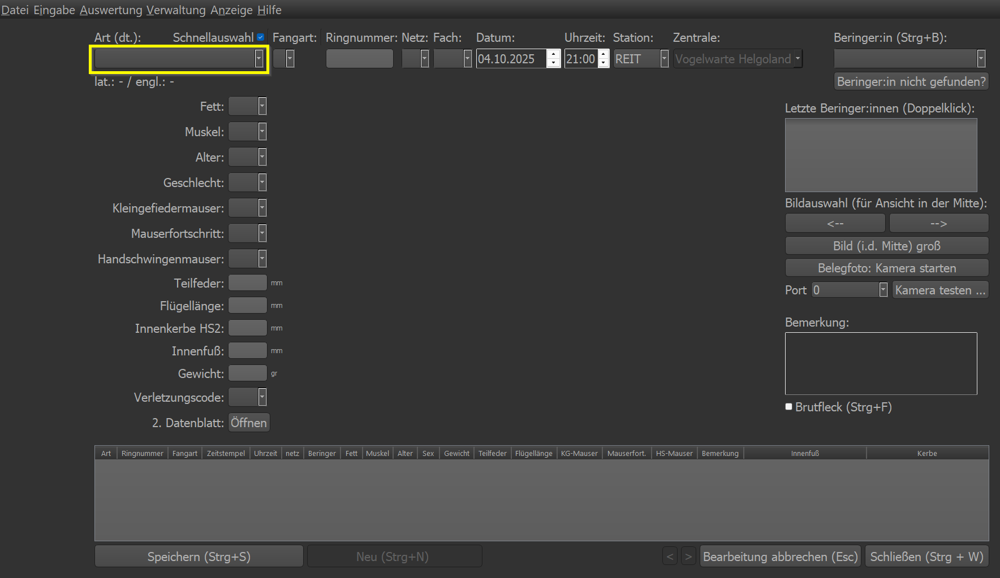Beim Aufruf über das Menü wartet Geier auf die Eingabe einer Art. Der deutsche Artname wird erwartet. Die Art kann auch über das Dropdown ausgewählt werden.
Art und Schnellauswahl
Folgende Arten sind als Schnellauswahl hinterlegt. Das bedeutet, dass bei der Eingabe der ersten beiden Buchstaben die Art automatisch ausgefüllt wird und der Cursor in das nächste Feld Fangart springt:
Amsel
Dorngrasmücke
Eivogel
Fitis
Klappergrasmücke
Kohlmeise
Mönchsgrasmücke
Singdrossel
Sumpfrohrsänger
Teichrohrsänger
Zaunkönig
Zilpzalp
Die Schnellauswahl lässt sich über die Checkbox über der Arteingabe ein- bzw. ausschalten. Über das Menü > Benutzereinstellungen lässt sich die Schnellauswahl für den Benutzer dauerhaft ein- bzw. ausschalten.
Fangart
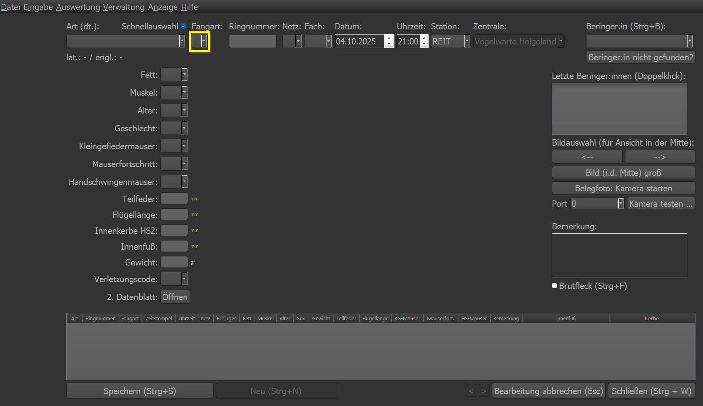Hier wird die entsprechende Fangart eingestellt. Folgende Auswahl steht zu Verfügung:
e für Erstfang (Vogel hat keinen Ring und wird zum ersten Mal beringt)
w für Wiederfang (das ist immer auszuwählen, wenn der Vogel bereits einen Ring hat)
d für Defekt (wenn ein Ring beim Beringen kaputt gegangen ist und nicht mehr verwendet werden kann)
k für Kontrollfang (vorrangig nicht verwenden, da das Programm diese Einstellung selbstständig vornimmt)
- f für Fremdfang (wenn sicher ist, dass es sich um einen Wiederfang handelt, der nicht an der eigenen Station und Zentrale
beringt wurde - auch dies schlägt das Programm selbstständig vor, falls der Ring nicht in der Datenbank enthalten ist)
Ringnummer
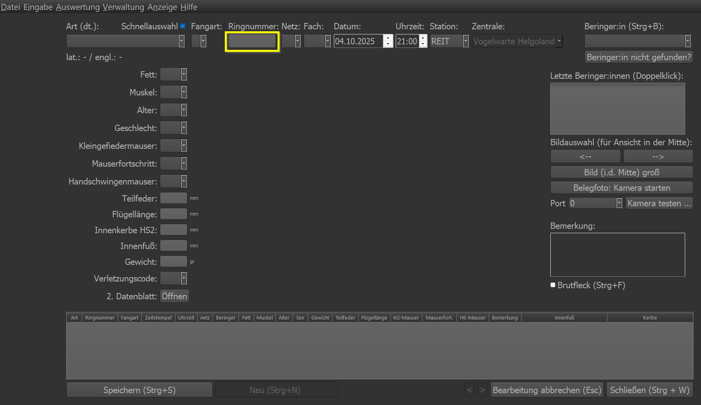Hier wird die nächste, automatisch erkannte Ringnummer eingetragen, sollte es sich um einen Erstfang handeln. Im Falle eines Wiederfangs muss hier die Ringnummer manuell eingegeben werden.
Netz und Fach
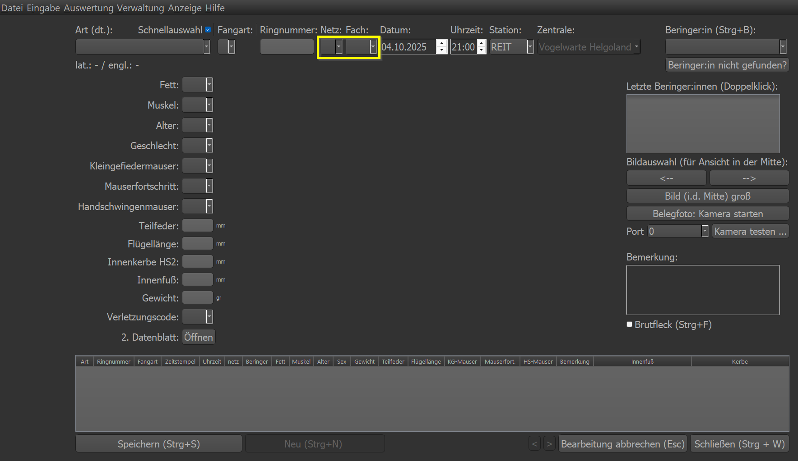Die Netznummer und die Kombination Fach/Seite wird in diese beiden Felder eingetragen. Also z.B. 23 für Netz 23 und 3L für 3. Fach von links reingeflogen.
Station
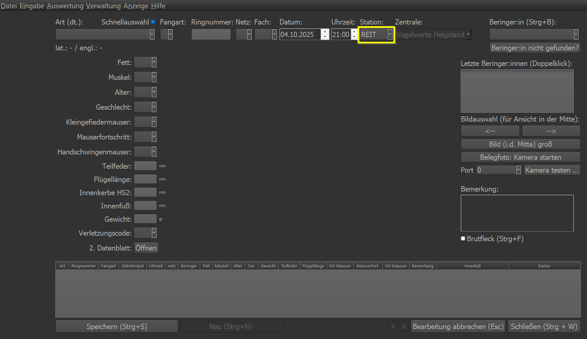Hier kann die (eigene) Station eingetragen und definiert werden.
Zentrale
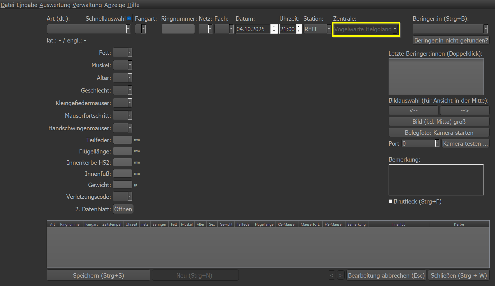Hier wird die zugehörige Beringungszentrale eingestellt. Dies ist normalerweise nicht editierbar. Im Falle eines Fremdfangs wird das Eingabefeld freigegeben. Dies kann mit Adminrechten geändert werden.
Beringereinstellungen
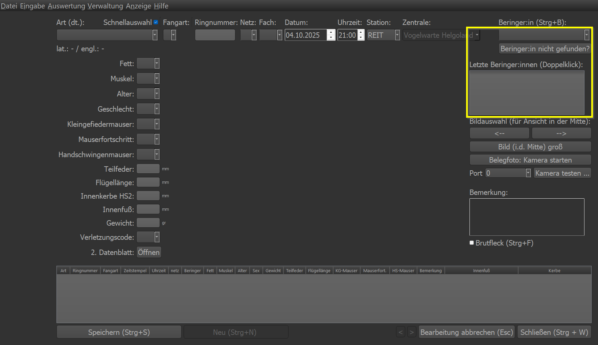Im Feld Beringer:in wird der/die Beringer:in eingetragen. Sollte der Name nicht auftauchen, so hat er/sie in diesem Jahr wohl
noch nicht beringt und ist daher noch nicht freigeschaltet. Mit dem Klick auf den Button Beringer:in nicht gefunden? landet
man in der Beringerverwaltung in der eine entsprechende Freischaltung für das aktuelle Jahr erfolgen kann. Siehe hier
Beringerverwaltung
In der Liste Letzte Beringer:innen (Doppelklick) lassen sich direkt mittels Doppelklick die entsprechenden Namen anwählen
und als Beringer:in eintragen. Dies ist für die Besatzung eine Erleichterung da es schnell die richtige Auswahl ermöglicht.
Biometrische Daten
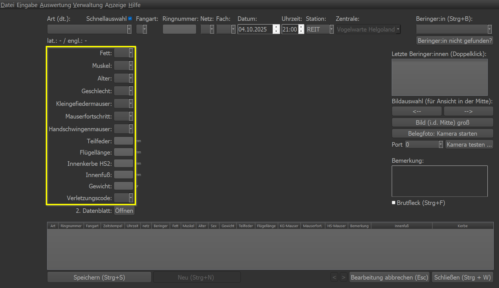In diesem Bereich werden die biometrischen Daten eingegeben. Die möglichen Werte lassen sich über das Dropdownmenü einsehen. Mit Rechtsklick auf das Dropdownmenü erhält man eine Dokumentation über die einzelnen biometrischen Daten.
Bild & Bildsteuerung
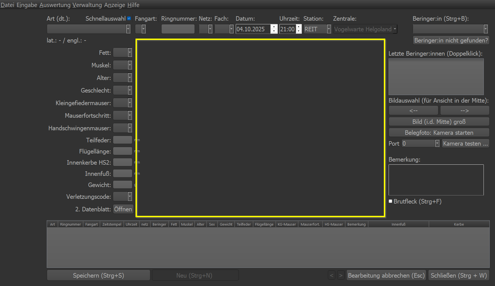Der freie Bereich in der Mitte ist für die Anzeige von Bildern reserviert. Sobald eine Art angegeben wurde, wird das erste gefundene Bild im zugehörigen Bild-Ordner angezeigt.
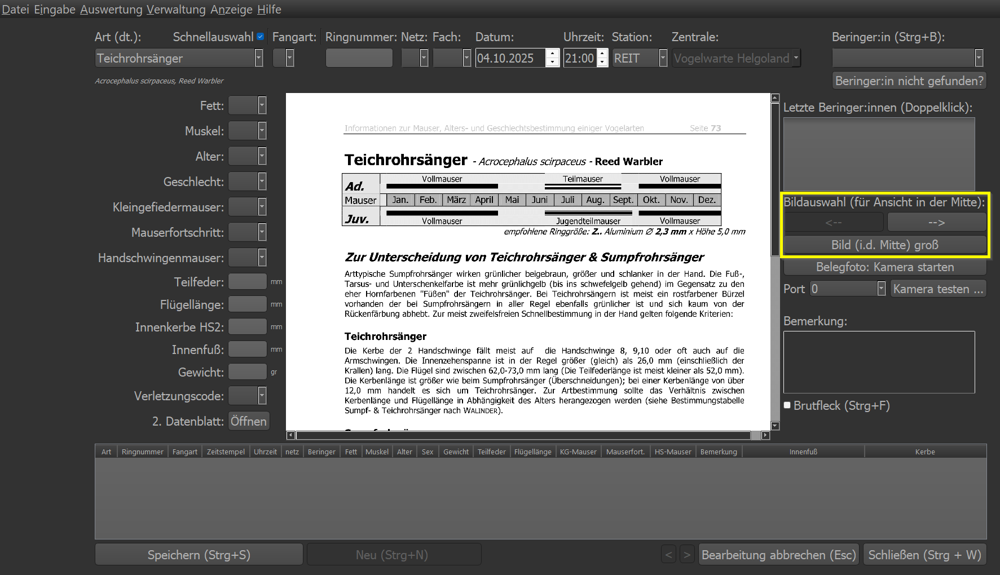Mittels der beiden Pfeiltasten lassen sich die Bilder im artzugehörigen Bilderordner anwählen/auswählen. Mittels Bild (i.d.
Mitte) groß lässt sich das angezeigte Bild in einem separaten Fenster öffnen und groß skalieren.
Kamera
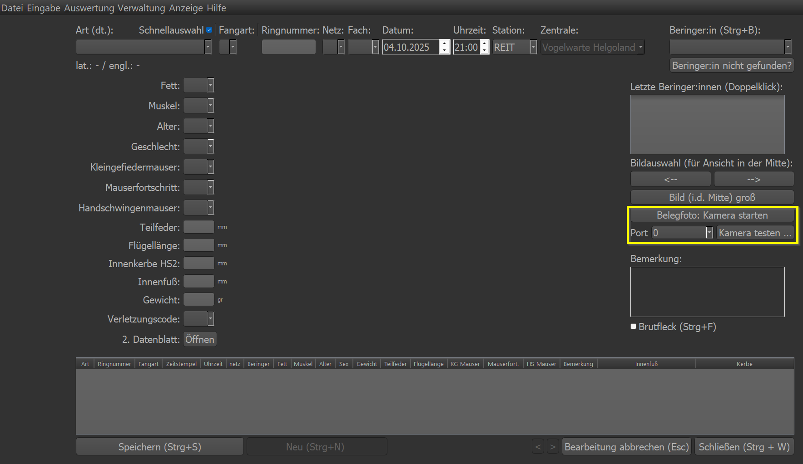Ist eine Kamera installiert und parametriert, lässt sich über den Knopf Belegfoto: Kamera starten ein Foto aufnehmen. Es
öffnet sich ein separates Fenster. Sobald das Bild aufgenommen werden soll, muss die Leertaste gedrückt werden.
Mit Kamera testen lässt sich die Einstellung der Kamera testen. Zusammen mit der Portauswahl kann man die richtige Kamera
„finden“.
Bemerkung
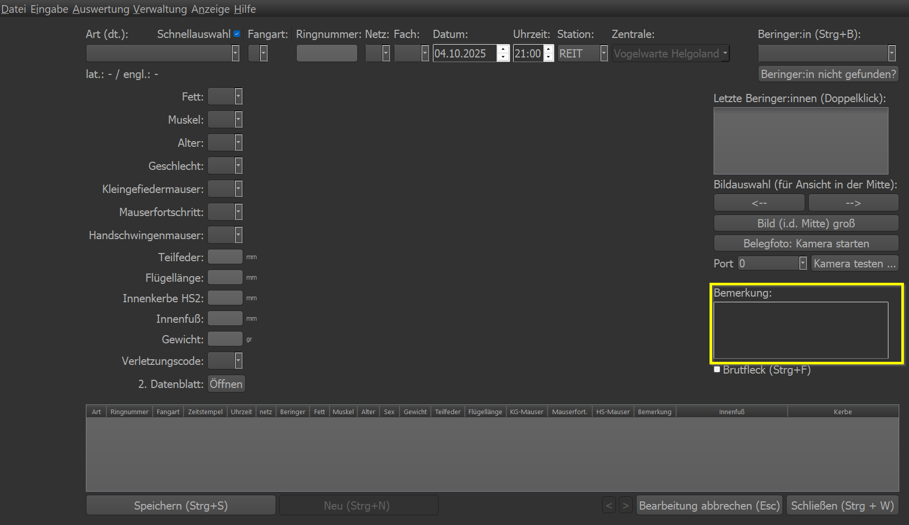Hier kann eine Bemerkung zum Datensatz eingegegeben werden. Dies ist bitte nur in Ausnahmefällen zu nutzen! Alle wichtigen Daten werden über die Eingabemaske abgefragt. Auch sind 99% der Verletzungen über den Verletzungscode abgedeckt. Beispiel für eine sinnvolle Bemerkung: „Handschwingenmauser nur am rechten Flügel“
Brutfleck
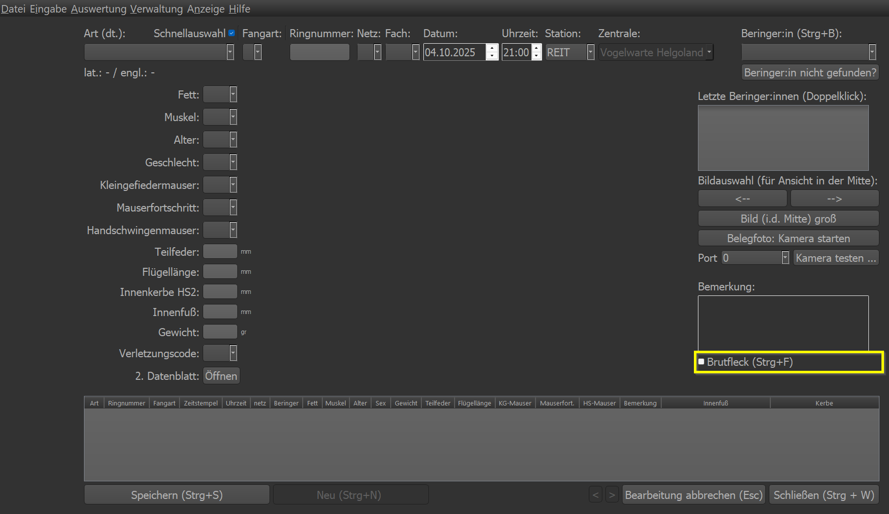Hat der Vogel einen Brutfleck, soll dies über das Anwählen der Checkbox gesichert werden. Shortcut ist Strg+f/Strg+F.
Wiederfangliste
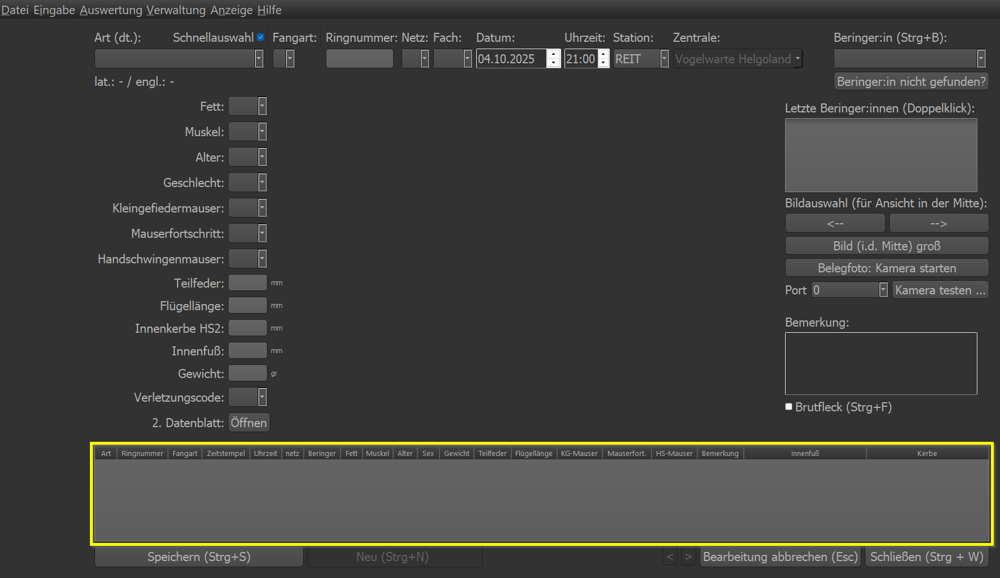Hier zeigt Geier bei einem Wiederfang die bisher aufgenommenen Datensätze des Vogels an. Es ist keine Bearbeitung möglich.